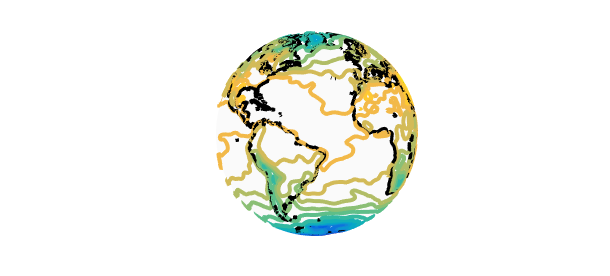

1. Introduction
Spherefun is a part of Chebfun for computing with functions on the sphere. The underlying approximation scheme is based on representing function on the sphere by certain structure-preserving low rank approximants [1]. Mathematically, most functions are of infinite rank on the sphere with a notable exception being spherical harmonic functions. However, many functions are numerically of low rank. When a function is of low rank, Spherefun is surprisingly efficient.
2. Is atmospheric temperature of low rank?
Recently, we were asked: Is the atmospheric temperature of the earth of low rank? In this example, we apply Spherefun to one atmospheric dataset and find that it can be well approximated by a low rank function.
Here is a data set on a 529x1024 latitude-longitude grid containing the global atmospheric temperature (in Kelvin) of earth on 12-July-2005 obtained from the National Oceanic and Atmospheric Administration (NOAA) Earth System Research Laboratory:
load AtmosphericData
We can use Spherefun to construct an approximation of $f$ and visualize the dataset:
f = spherefun( Temp );
surf(f), colormap(jet), colorbar, axis off, view([50 0]), hold on
spherefun.plotEarth('k-'), hold off
The last line includes the landmasses of earth on the plot.
We can find out more about the underlying data set by looking at the rank:
f
f =
spherefun object
domain rank vertical scale
unit sphere 185 3.1e+02
Spherefun calculated the rank of $f$ as 185. Since the dataset is of size 529x1024, we regard this as of low rank. For a precise defintion, see [2].
3. Investigating the atmospheric temperature
There are over a hundred commands in Spherefun and we can now investigate properties of atmospheric temperature over the earth. Before we begin, we convert the function to units of Celsius by subtracting 273.15.
f = f - 273.15;
What is the mean temperature of the earth?
mean2( f )
ans = 16.367643667365925
What is the temperature at the North and South pole?
f( 0, 0, 1 ) % North pole f( 0, 0, -1) % South pole
ans = 0.624920062687727 ans = -44.513990845477139
This confirms that the atmospheric temperature data was taken during summer in the Northern hemisphere.
What is the temperature along the equator?
plot( f( :, pi/2 ) ) % In spherical coordinates.
xlabel('Longitude, \lambda'), ylabel('Temperature (Celsius)')
What do the isolines look line?
contour( f, -40:5:40, 'LineWidth', 2 ), axis off, view([50 5]), hold on
spherefun.plotEarth('k-'), hold off

What is the zonal mean temperatue?
zonalMean = mean(f,2);
plot(zonalMean), xlim([0 pi])
xlabel('Co-latitude, \theta'), ylabel('Temperature (Celsius)')
4. Poisson solver
We can also compute the steady heat profile with an external source of $f$, assuming there are no internal heat sinks or sources. This requires solving Poisson's equation on the sphere.
[n, m] = length( f );
steadyHeat = spherefun.Poisson( -(f - mean2(f)), 0, m, n );
plot( f ), colormap(jet), axis off, view([50 0]), hold on
spherefun.plotEarth('k-'), title('Original dataset'), snapnow, hold off
plot( steadyHeat ), colormap(jet), axis off, view([50 0]), hold on
spherefun.plotEarth('k-'), title('Steady Heat'), snapnow, hold off
5. Gaussian filter
It is common to smooth data by applying a Gaussian filter. Spherefun allows you to do this with the filter command, which is the continuous analogue of the MATLAB command with the same name. Here, is the result after applying a Gaussian filter:
g = smooth( f, 0.01 );
surf(f), colormap(jet), axis off, view([50 0]), hold on
spherefun.plotEarth('k-'), title('Original dataset'), snapnow, hold off
surf(g), colormap(jet), axis off, view([50 0]), hold on
spherefun.plotEarth('k-'), title('Filtered dataset'), snapnow, hold off
This type of filter has been demonstrated to be particularly attractive for smoothing global climate data [3].
References
[1] A. Townsend, H. Wilber, and G. B. Wright, Computing with functions in spherical and polar geometries I. The sphere, submitted, 2016.
[2] A. Townsend, Computing with functions in two dimensions, PhD Thesis, University of Oxford, 2014.
[3] K. Marvel, D. Ivanova, and K. E. Taylor, Scale space methods for climate model analysis, J. Geophys. Res. Atmospheres, 118, 5082-5097, 2013